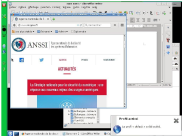

Compartmentalized computing with CLIP OS
People searching for a hardened Linux distribution have a wide range to choose from: they can use one of the security-focused offerings, or they can, with sufficient expertise, simply apply hardening patches and build everything to their taste. Such systems, of which Qubes OS is a good example, usually concentrate on the user's privacy. Recently, the French cybersecurity agency (ANSSI) released the source code for CLIP OS, its hardened operating system based on Linux. CLIP OS has been in development for more than ten years and, while sharing many elements with other hardened Linux distributions, this one is targeted to different needs: the focus is on providing maximum isolation between confidentiality levels and different users of the same system. As an illustration: the administrator is not able to access other users' data.
History: CLIP OS 4 and 5
According to the general description document [PDF, in French], CLIP OS started in 2005 as a research project aiming to provide a two-level client system that allowed simultaneous access to two networks from two "containers", one with sensitive data and the other without. This first prototype was built using FreeBSD 4.8. In early 2006, ANSSI decided to continue this development, this time based on Linux 2.6, implementing the same two-level, two-network configuration while adding new functionality like updates, audit, and administration. The result was CLIP version 3, which was deployed on more than 100 systems in a dedicated network. In addition to the desktop version (CLIP-RM), there was also a gateway variant (CLIP-GTW) for IPSec gateways.
Based on the experience of CLIP version 3, ANSSI began developing
version 4 in 2009. It added modular kernel configuration, new
network
connection modes (DHCP, WiFi, 3G
networks), new hardware support (sound cards, printers), the ability to transfer
files between the two levels of the system, and a graphical interface for
administrator tasks. A number of standard Linux
applications were supported, including
KDE 4, Mozilla Thunderbird, and LibreOffice. One
difference from other Linux distributions was visible in an
additional bar (the "confidentiality bar") on the desktop that as can be

The source for version 4 was released, but as a "non-working reference source archive" that is not expected to build correctly. The security-related projects for this version are listed explicitly for those who would like to take a look.
ANSSI has now released the source code for an early stage of the next version, CLIP OS version 5. While it is missing most of the features from version 4, it is built from the start to be compiled by external people. The documentation is written in English this time, and there are detailed build instructions — a big change from version 4, which provided nearly all of its documentation in French. The project is hosted on GitHub, bug tracker included, with some activity involving both the ANSSI team and the public.
Design and main features
The design of CLIP OS 5 includes three elements: a bootloader, a core system, and the cages. The system uses secure boot with signed binaries. Only the x86 architecture was supported in the previous versions, and there are no other architectures in the plan for now. The core system is based on Hardened Gentoo. Finally, the cages provide user sessions, with applications and documents.
Processes running in separate cages cannot communicate directly. Instead, they must pass messages using special services on the core system; these services are unprivileged and confined in the cage system, but privileged in the core. These communication paths are shown in this architecture diagram from the documentation. Cages are also isolated from the core system itself — all interactions (system calls, for example) are checked and go through mediation services. The isolation between applications will be using containers, and the team plans to use the Flatpak format. The details of the CLIP OS 5 implementation are not available yet, as this feature is planned for the stable release.

A specific Linux security module (LSM) inspired from Linux-VServer will be used to add additional isolation between the cages, and between the cages and the core system. Linux-VServer is a virtual private server implementation designed for web hosting. It implements partitioning of a computer system in terms of CPU time, memory, the filesystem, and network addressing into security contexts. Starting and stopping a new virtual server corresponds to setting up and tearing down a security context.
Another central design point of CLIP OS is that the system is multi-level, meaning that it is designed to have users working with documents at different confidentiality levels. However, users may work with documents at different levels at the same time, while each cage can manipulate documents of one level only. Passing documents between cages (and thus confidentiality levels) requires a specific action from the user. In CLIP OS 4 it was completely integrated into the graphical user interface and all that was required was to choose the transfer option from the context menu (as documented for version 4 [PDF, in French]).
The CLIP OS 5 documentation refers to multiple security requirements and considerations at different levels. At the hardware level, UEFI secure boot and a trusted platform module (TPM) are needed. In addition to that, CLIP OS assumes that hardware-assisted virtualization is supported. All software will be built from source with hardened compilation options, with the exception of the firmware for certain devices. The sources themselves should be cryptographically signed by the maintainers or other "trusted sources" (for third party software). In future releases, builds will be binary reproducible.
Rich documentation (mostly in French) exists for the security features of CLIP OS 4. This includes, for example, patches for the "write XOR execute" policy that ensures that a program is able to execute only code provided by the system. The goal is to limit arbitrary code execution from user code. This is already possible for binary code in ELF files, but the CLIP OS team has modified the interpreters of popular scripting languages to support this feature: they have added an additional O_MAYEXEC flag for open() to check in the interpreter if the mount options for the underlying filesystem allow execution.
Current state of CLIP OS 5 and next steps
The source code that has been released corresponds to an alpha release, which does not include most of the security features. It contains the build system, the bootloader, and a basic system that allows kernel tuning (with a guide explaining the various options) and, notably, with a root partition mounted read-only. Further development on CLIP OS will be done in the open, without direct pushes from ANSSI. The project aims for public code review in Gerrit (currently being set up) and contribution of the modifications to upstream, including ebuilds to Gentoo and kernel patches. The plan is also to upstream the changes that have been already made in the previous versions.
A detailed roadmap shows that the security options will be added in the next beta release (which is in development). The plan includes an update system (with fallback, similar to what is available in Android), partition management with integrity and encryption, confined system services using features of systemd, new services, confined administration roles (admin and audit role; both non-root), and support for various hardware platforms.
Conclusions
CLIP OS has a different use case than most other security-related Linux distributions. It concentrates on strong isolation, with the threat model including untrusted users, administrators, and a local attacker with full access to the hardware. The features that will be developed may be interesting for other distributions and system builders. There is also a good chance that the patches may be generic enough to be integrated into the corresponding upstream projects. On the other hand, the question remains how much of the source code from previous versions is going to be used, or if the new version is a complete rewrite.
Transitioning from a closed, government project to open source brings a number of difficulties and risks, too. It remains to be seen how the team will handle upstreaming and interactions with the wider community. If ANSSI commits to making its security developments open source, for the benefit of a wider audience, this may result in a useful contribution to the free-software world. Those who can read French can review the detailed security documentation of the older versions to get insight in what is likely to come (security patches are already available for download and may be reused). It will be interesting to watch how the project evolves and if it lives up to its promise.
[See the
slides from a recent Kernel Recipes talk [PDF]
and the video of the
talk for details of the
security patches developed for CLIP OS.]
| Index entries for this article | |
|---|---|
| Security | Distributions |
| GuestArticles | Rybczynska, Marta |
Posted Oct 29, 2018 19:31 UTC (Mon)
by SEJeff (guest, #51588)
[Link] (2 responses)
https://www.usenix.org/conference/8th-usenix-security-sym...
Posted Oct 30, 2018 9:29 UTC (Tue)
by ortalo (guest, #4654)
[Link] (1 responses)
Posted Oct 31, 2018 14:09 UTC (Wed)
by marcH (subscriber, #57642)
[Link]
Not difficult at all, look: https://www.google.com/search?q=disable+selinux (over 1 million hits!)
In *some* situations disabling SElinux can make the system... more secure by removing the false sense of security provided by an obviously misconfigured solution.
Knowing where it came from, I've always wondered if anyone involved in the design actually expects SELinux to be frequently misconfigured.
Posted Oct 30, 2018 9:31 UTC (Tue)
by ortalo (guest, #4654)
[Link] (1 responses)
Posted Oct 31, 2018 0:24 UTC (Wed)
by edeloget (subscriber, #88392)
[Link]
The infrastructure might still be more capable (don't know yet).
Posted Oct 30, 2018 10:22 UTC (Tue)
by Villemoes (subscriber, #91911)
[Link]
Compartmentalized computing with CLIP OS
Compartmentalized computing with CLIP OS
Like when intelligence analysts are browsing the public (dark)web while writing governmental reports ; and the commander is paranoid about viruses revealing secret information on ministers mistresses (before they publish a book themselves).
I am not so optimistic that these mechanisms can be useful in the general case ; but I really welcome the move towards doing the development of the next version in the open.
Compartmentalized computing with CLIP OS
Compartmentalized computing with CLIP OS
Do you share that impression (esp. in CLIP OS 4)?
Compartmentalized computing with CLIP OS
Compartmentalized computing with CLIP OS